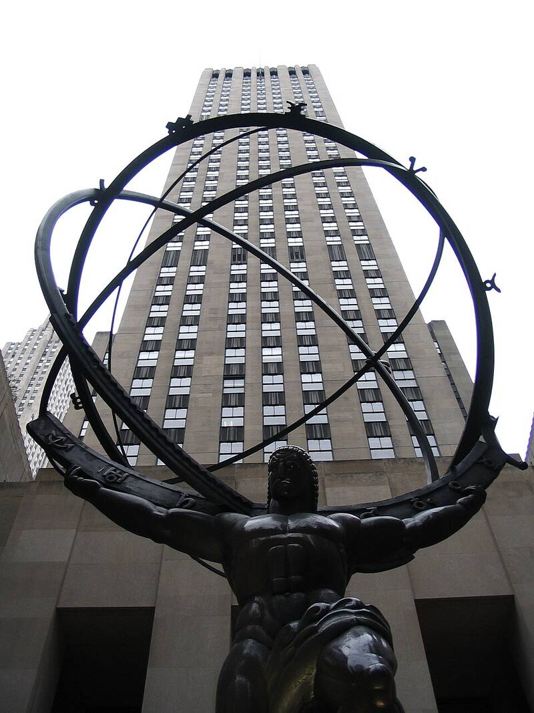

British Security Coordination
Rockefeller Center, New York City, 1940 to 1946

Headquarters of Britain's secret intelligence network in the Americas during World War II, run by Canadian William Stephenson, code name Intrepid, from offices in the International Building at Rockefeller Center. Operating under cover of the British Passport Control Office, it ran counterespionage, propaganda, and covert operations to move the U.S. away from isolationism, and helped train the Americans who formed the OSS. 1
Open in the interactive Watcher
Related
- William Stephenson Person
- William Donovan Person
Sources
- British Security Co-ordination Wikipedia